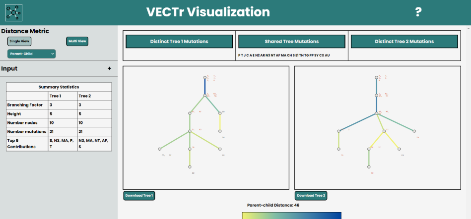

VECTr:
Visual Encodings for Clonal Trees
Tumors are the result of an evolutionary process (Nowell 1976). Clonal trees are one way to describe the evolution of a tumor, and it is often helpful to visually and quantitatively compare these trees. We have implemented a visualization tool, VECTr, that can take two input trees and output a visual comparison between them based on a user-chosen distance metric.
These distance metrics are fundamental to the comparisons and are described below
Click here to learn more about the distance measures

VECTr, pictured above, is a web based tool for visualizing clonal trees. You can begin by selecting the trees you will be visualizing.
We currently support NEWICK and DOT tree formats so any input tree will have to be in either format. There are two example trees that
are set by default but to replace those you can either select a file or input the tree manually through the textbox. You can then select
the file format and save your input.
Parent-child is the default distance metric for the tool, however, you can slect different distance metrics using the dropdown.
The available distance measures are Ancestor-Descendant, Parent-Child, CASet, and DISC (More information on the distance measures can be found above).
There are two options of views for you to choose from. Single View allows you to visualize one distance measure at a time as well as download the
visualizations. While Multi View, as the name implies, allows you to view trees with multiple distance measures
but does not allow for download or highlighting functionality.
Below are some visualization outputs from VECTr that show comparisons between two trees that contain data from a triple-negative breast cancer data set.
For a brief demo of the VECTr functionality watch the video below!